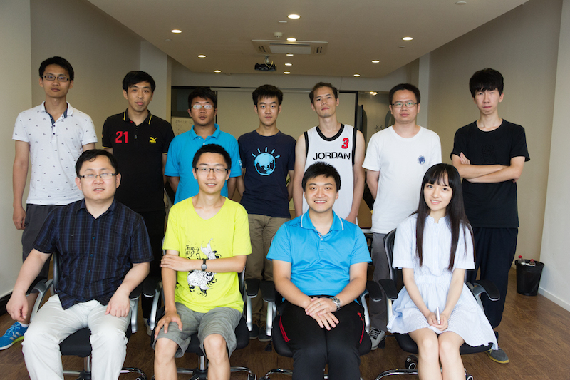
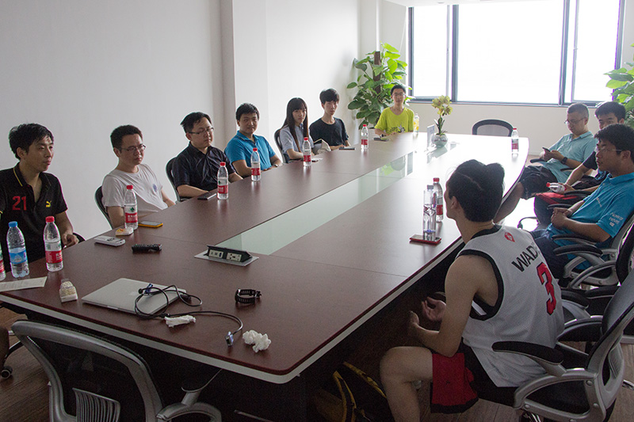
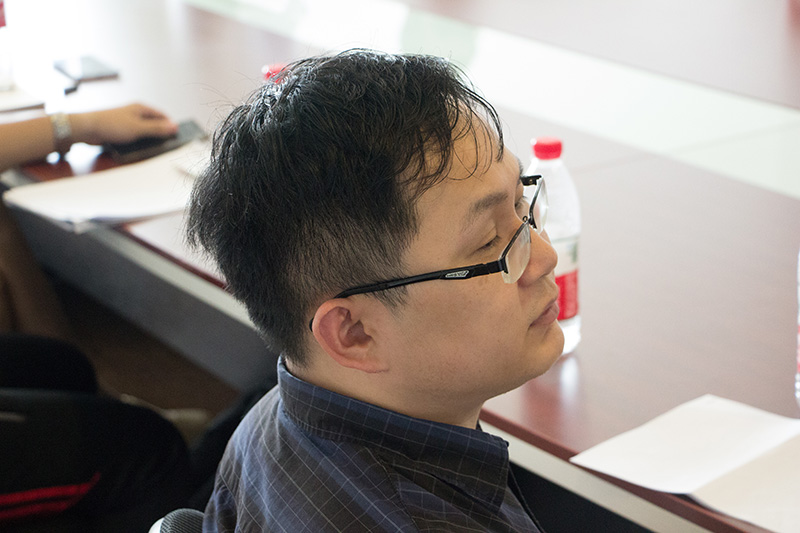
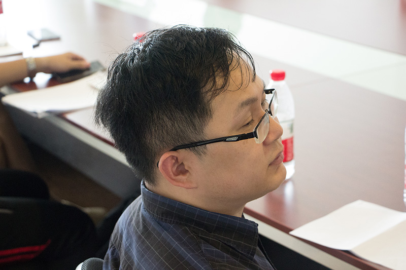
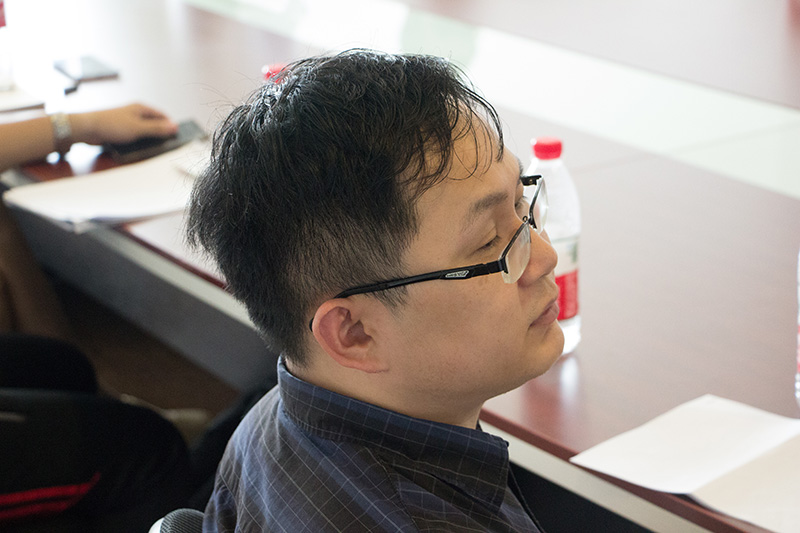

下面是与会者合影和部分活动图片。由于场地光线情况比较极端，故图片质量不甚理想，望各位网友海涵。
肖像权由当事人所有，图片版权由 DeathKing 保留。除非征得当事人及版权所有人，任何人不得以使用本页中的图片。
与会者合影
演讲者风采
活动图片

 

下面是与会者合影和部分活动图片。由于场地光线情况比较极端，故图片质量不甚理想，望各位网友海涵。
肖像权由当事人所有，图片版权由 DeathKing 保留。除非征得当事人及版权所有人，任何人不得以使用本页中的图片。
